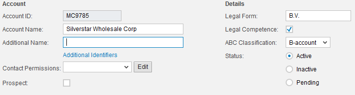
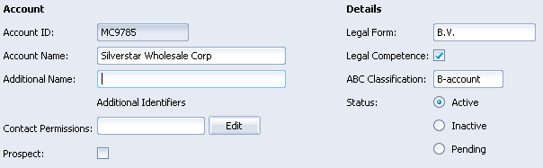
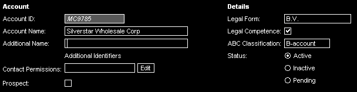

SAPUI5 Theming
The Basics
SAPUI5 is an HTML UI library, therefore styling is done using Cascading StyleSheets (CSS). This allows creating an impressive visual experience using a widely known standard technology which is well-accepted on the market. UI5 supports the creation and usage of different visual designs - called Themes - that can be used alternatively and switched on the fly, thus allowing for the same application to have a very different look, depending on the user's design approaches, or on accessibility requirements. Existing themes can serve as a base for new themes and in case of new design trends, it is possible to create a matching theme for all existing applications without modifying them. The abstraction level is that high that the theme handling is decoupled from application development and done on a separate layer. The SAPUI5 framework takes care of loading the required CSS files and offers ways of switching themes. The UI5 design time tools provide support for creating and modifying themes.
On top of pure CSS, UI5 offers a variety of optional features that add value regarding modularization, modification, compatibility and performance:
- CSS variables, mix-ins, color calculations and other functions, provided by the Open Source library " LESS"
- In particular the CSS variables are used for centrally defined and centrally modifiable colors and the UI5 Theme Editor puts a nice graphical user interface on top
- Compilation of one CSS file per control library out of modular per-control CSS files
- Optimization/compression of CSS size
- Clean browser switch and mobile platform detection available (inside CSS code)
- Base theme (as base for an always required style to reduce the amount of CSS required for specific themes)
- Generic Right-to-Left support
The SAPUI5 framework supports the following themes:
- Gold Reflection
- Platinum
- High Contrast Black
For the UI5 Mobile controls for touch devices the following theme is provided:
- SAP Mobile Visual Identity (this one visually matches the "Gold Reflection" theme provided for desktop controls)
Details
- Gold Reflection
- A modern design supporting the controls from the sap.ui.ux3 control package, as well as the controls delivered with the other packages such as sap.ui.commons or sap.ui.table. The Shell is a prominent control example for usage with the Gold Reflection design. The predefined colors of this theme are grey and white backgrounds with black headers and orange and blue highlights.

- A modern design supporting the controls from the sap.ui.ux3 control package, as well as the controls delivered with the other packages such as sap.ui.commons or sap.ui.table. The Shell is a prominent control example for usage with the Gold Reflection design. The predefined colors of this theme are grey and white backgrounds with black headers and orange and blue highlights.
- Platinum
- A light design with background color white, the controls are colored in smooth light colors, mainly light blue, for buttons, for example.

- A light design with background color white, the controls are colored in smooth light colors, mainly light blue, for buttons, for example.
- High Contrast Black
- An accessibility theme for visually impaired users. The background is black, text and user interface controls are white, providing maximum contrast.

- An accessibility theme for visually impaired users. The background is black, text and user interface controls are white, providing maximum contrast.
SAPUI5 Theming Components
From a high-level approach, UI5 theming involves the following parts:
- Design Time Environment
- Editors
- Preview Function
While UI5 theme files could be written using notepad.exe, the UI5 Tools integrated into Eclipse support you in creating and modifying themes with an enhanced CSS editor and preview capabilities.
CSS Generator
The theme generator has several functions: LESS processing (CSS variables substitution etc.), merge of CSS files created for different themes and controls for optimal runtime consumption, as well as compression or right-to-left substitution if required.
Runtime Loading Mechanisms and Switching
The UI5 runtime takes care of loading the appropriate CSS file for the control libraries used in the application page by adding <style> tags to the document head. There is also an API available for switching themes which replaces the CSS URLs and therefore does not modify the application state.
Enhanced Concepts
On top of pure CSS, UI5 theming introduces advanced concepts and functionality which can be used optionally. This includes the following:
CSS Variables, Functions and more
UI5 uses the popular CSS preprocessor LESS. This tool introduces several features, including CSS variables - a concept which also has been heavily demanded by the CSS community: in any UI5-controlled CSS file, variables can be defined and then be referenced anywhere in the CSS code of the same library. These variables are mainly used for colors. All CSS variables are global. The CSS variable concept contributes to a consistent way in implementing and changing the styles.
Furthermore, the UI5 Theme Editor uses these variables and adds an easy-to-use interface with instant preview capabilties and export of Themes.
LESS adds more features like color calculations, mix-ins and CSS selector nesting. The color calculations are used in UI5 to derive many different color shades in the UI5 from just a few variables.
Here is the syntax:
@sapUiText: #000000; /* define the text color as 'black' */
button {
color: @sapUiText; /* buttons will automatically have the current text color, which is '#000000' right now */
[...]
}
The UI5 theme generator then takes care of substituting all references to a CSS variable by the current value of this variable. This happens during the build of the control library.
Additionally, a specific theme can modify the CSS parameter values given by the base theme (see below). So a control can just define its text color to use sapUiText by default which will automatically take care of applying the correct color for every theme or user modification: The theme generation will create one CSS file per theme, and the substitution of the CSS parameter references will always take the theme-dependent value into account. So a visually very different theme can be easily created by just changing a couple of colors.
Additional benefits of CSS variables are for example:
- They can be used to generically build simple styling tools that allow a limited degree of freedom (=changing the CSS parameter values). The UI5 Theme Editor is an example for such a tool.
- They can also be linked to metadata like what group of colors they belong to, to which colors they need to have some visual contrast, etc.
Compilation of one CSS file
UI5 CSS generation does not only substitute the CSS variable values but also takes care of bringing all CSS files from a control library into one file to be loaded at runtime, this encreases the performance. The reasons to not have all styles defined within one file at development time are for example:
- Less collisions and merging when different developers edit the styles of their controls.
- Clear separation between the styles for different controls (this helps greatly with estimating/testing the impact of a CSS modification)
- Keeping the door open for future optimizations regarding runtime performance and data transfer by tailoring CSS files on server-side that only contain the CSS required on the current application page.
Optimization / Compression of CSS Size
For performance reasons, the UI5 CSS generation can optionally remove all comments and unnecessary whitespace and can collapse verbose declarations into a more compact format. In the future, it could even recognize ineffective CSS rules.
"Clean" Browser Switch Available Inside CSS code
In all application pages using UI5, the HTML root tag of the document gets the additional attribute "data-sap-ui-browser" where the value is the type and the current browser version. When browser-specific CSS needs to be written, this attribute can be used in CSS selectors.
html[data-sap-ui-browser="ie8"] button { /* this rule will only be applied if the current browser is Internet Explorer 8 */
margin-top: 0px;
}
html[data-sap-ui-browser*="ie"] button { /* this rule will only be applied if the current browser is ANY version of IE */
padding-top: 0px;
}
Base Theme for Always-Required Style
While some of the style and layout applied using CSS is clearly depending on the current theme - and customers are likely to modify such style rules - there are other style rules that are required for a control to work properly and unlikely to differ for different themes. Examples are: the overflow behavior, positioning of popup elements, the mouse cursor type, the display mode,…
UI5 promotes and supports keeping those style definitions in the so-called base theme, which serves as a common base for all themes.
Themes are built upon this base style, defining their specific visual design by applying colors and images, sizes and fonts.
UI5 theme generation takes care of combining the base theme with the specific theme for each generated theme CSS file. Because the specific CSS is appended to the base theme, a specific theme can always override styles defined in the base theme. If this step is required often, the respective style declaration probably should not be located in the base theme.
Any style declarations which are referencing CSS variables (at least those common ones defined in the base theme) can also be done in the base theme, and it is sufficient to do it only there: The CSS generation will apply the correct value for each respective theme. So this split between base theme and specific themes avoids double creation and maintenance of CSS parts which are common for all themes and keeps the CSS files smaller that need to be written for any new theme.
Generic Right-to-Left Support
For certain countries, RTL text mode (right-to-left) needs to be supported. In order to avoid the need to create a completely new set of CSS files for those countries, UI5 supports the generic RTL generation. Basically, right and left margins are exchanged, and much, much more (everything is mirrored, including CSS3 rotations etc.).
Everything else which is not covered by this automatic transformation can be fixed by style rules that are only applied in the RTL case.
Switching Themes
For end-users, applications can offer arbitrary ways of selecting/switching themes, based on the technical theme switching functionality offered by UI5. Technically, SAPUI5 offers three means of setting the theme to use:
- The initial theme can be hardcoded in the application (in the HTML script tag loading UI5) or in a JS configuration object defined before UI5 is loaded. This setting has the lowest priority.
- A URL parameter (e.g. ...html?sap-ui-theme=sap_platinum) can be used when starting a UI5 application to set/override the initial theme.
- A JavaScript API (sap.ui.getCore().applyTheme("sap_platinum")) can be used to switch themes on the fly. The application state is not lost, there is no server roundtrip (except for loading the CSS if not cached), only the stylesheets are exchanged.